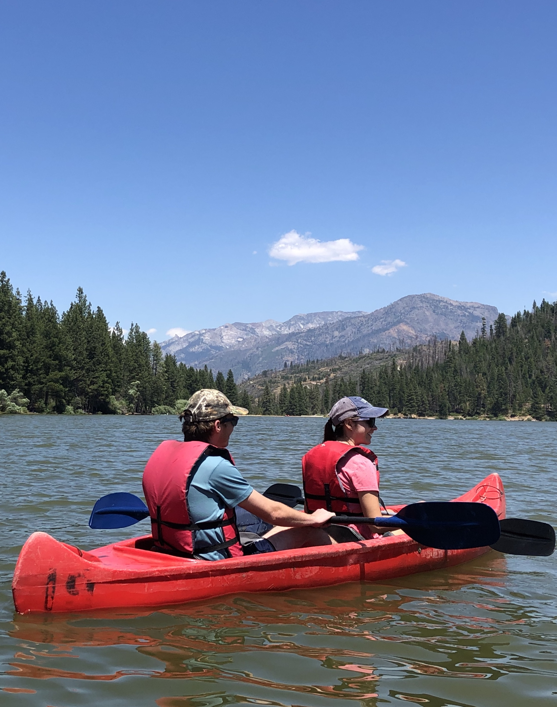

About
I’m a graduate student in the Master of Environmental Data Science program at the Bren School of Environmental Science & Management at UC Santa Barbara. My current interests lie in sustainable food systems, addressing climate change, and reducing carbon footprints. I completed my undergraduate studies at UC Santa Barbara in 2017, graduating with a Bachelor of Science in Environmental Studies. As an undergraduate student, I led reforestation and sustainable agriculture projects in South America for a nonprofit organization. After graduating, I worked as an Environmental Specialist for an Environmental, Health, Safety, and Sustainability consulting company, where I evaluated and identified environmental impacts as well as recommended and implemented solutions for clients in the private and public sectors. During my time working as an environmental consultant, I observed the disproportionate environmental impacts in marginalized communities and the need for reproducible data science and visualization skills to develop solutions to environmental issues. My goal is to utilize data science tools to derive data-driven solutions for complex environmental problems and effectively communicate the information so that it is accessible and enacts change.
I have been fortunate enough to travel around the world, whether it was for leisure, volunteering, or professional purposes. My aspiration is to visit all the continents someday! Check out some of the destinations I have explored thus far.
I will be adding travel photos soon
During my free time, I enjoy being outdoors and participating in various activities such as playing soccer or volleyball, running, hiking, and camping with friends. I’m also passionate about health and wellness, and like to stay informed and inspired by reading books on nutrition and related topics. Prioritizing my physical health is important to me, so I also make time for regular workouts. Cooking and experimenting with plant-based recipes is another hobby I enjoy. My hobbies help me maintain a healthy work-life balance and bring joy to my everyday routine.


